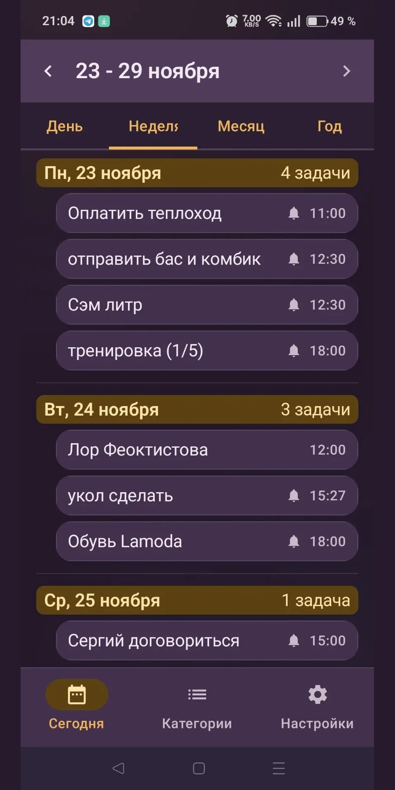
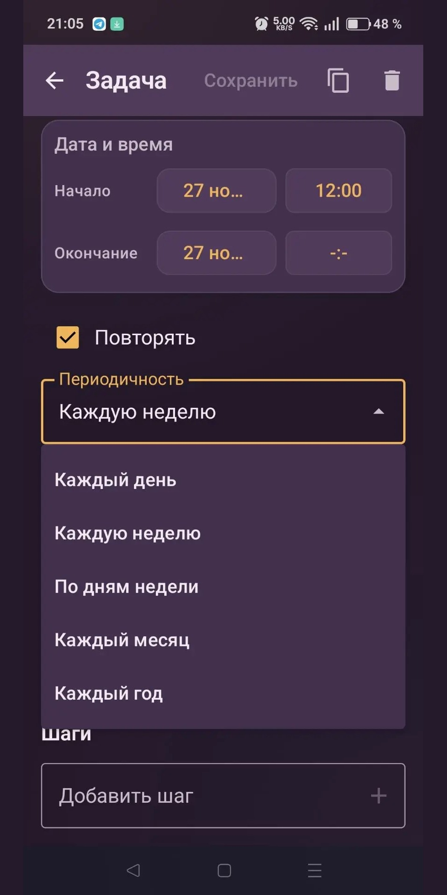
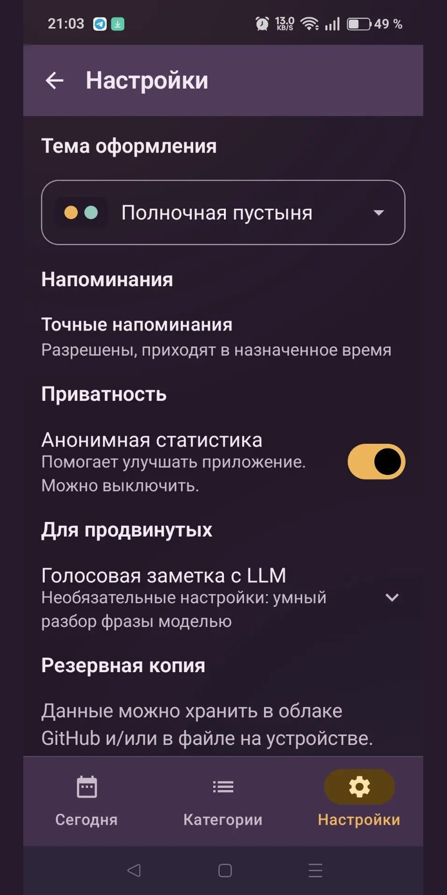

Что умеет
- Задачи с подпунктами и прогрессом.
- Голосовой ввод: скажите «купить хлеб завтра в 18:00, напомни за час» — задача появится с датой и напоминанием.
- Несколько напоминаний на задачу, точное время.
- Повторяющиеся задачи: каждый день, неделю, месяц, год.
- Категории с иконками, цветами и своим порядком.
- Виды на день, неделю, месяц и год.
- 14 тем оформления, включая тёмную и космическую.
- Резервная копия: файл на устройстве или приватный GitHub Gist.
Приватность
Задачи хранятся на устройстве. Приложение не требует аккаунта и не отправляет данные на серверы
разработчика. Анонимную статистику можно выключить в настройках.
Политика конфиденциальности.
Скриншоты


